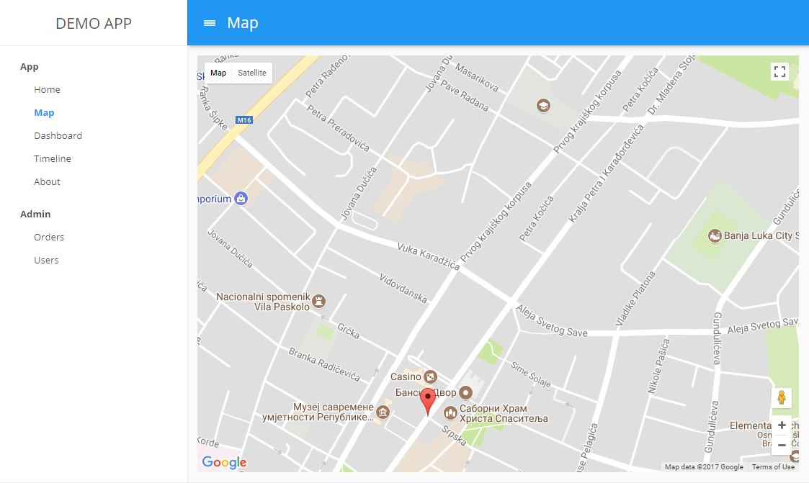

WEBPACK & CxJS
Overview of Webpack features used in development of CxJS apps
What is webpack?

Features
- Asset Loading
- Development Server
- Code Splitting
- Bundling & Production
What is CxJS?
Features
- Widgets
- Charts
- Layout
- Themes
- Routing
- Localization
Demo Apps
Getting Started
(Node.js required)
md demo-app
cd demo-app
npm init -y
npm install cx-cli --global
cx scaffold
npm start
Demo App
Webpack Configuration
const path = require('path');
const config = {
entry: './path/to/my/entry/file.js',
output: {
path: path.resolve(__dirname, 'dist'),
filename: 'my-first-webpack.bundle.js'
},
module: {
rules: [
{ test: /\.js/, use: 'babel-loader' }
]
},
plugins: []
};
module.exports = config;
Webpack Loaders
webpack loaders transform all types of files into your application's dependency graph:
- ES6 (Babel)
- TypeScript
- CSS, Sass, PostCSS
- Images
- Icons & Fonts
babel-loader
{
test: /\.js$/,
//register here any ES6 based library
include: (app|cx|cx-react|cx-google-maps)[\\\/]/,
loader: 'babel-loader',
query: {
presets: [
["cx-env", {
targets: {
chrome: 50,
ie: 11,
ff: 30,
edge: 12,
safari: 9
},
modules: false,
loose: true,
useBuiltIns: true,
cx: {
imports: {
useSrc: true
}
}
}]
]
}
}
webpack-development-server
plugins: [
new webpack.HotModuleReplacementPlugin()
],
devServer: {
hot: true,
port: 8088,
inline: true,
historyApiFallback: true,
proxy: {
'/api': {
target: 'https://other-server.example.com',
secure: false
}
}
}
Hot Module Replacement (HMR)
- Retain application state
- Tweak styling faster
- Works best with two screens
HMR (in the app)
//CxJS store
const store = new Store();
//webpack (HMR)
if (module.hot) {
//register module for HMR
module.hot.accept();
// remember data on dispose
module.hot.dispose(function (data) {
data.state = store.getData();
if (stop)
stop();
});
//apply data on hot replace
if (module.hot.data)
store.load(module.hot.data.state);
}